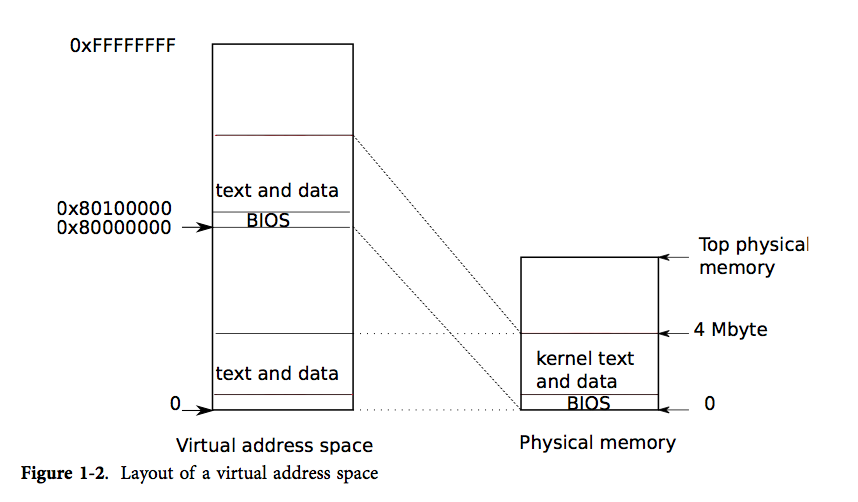

通过第一个进程的创建来解释 xv6 是如何开始运行的，让我们得以一窥 xv6 提供的各个抽象是如何实现和交互的。
进程
进程是一个抽象概念，它让一个程序可以假设它独占一台机器。进程向程序提供“看上去”私有的，其他进程无法读写的内存系统（或地址空间），以及一颗“看上去”仅执行该程序的CPU。
xv6 使用页表（pagetable，由硬件实现）来为每个进程提供其独有的地址空间。页表将虚拟地址（x86 指令所使用的地址）翻译（或说“映射”）为物理地址（处理器芯片向主存发送的地址）。

xv6 为每个进程维护了不同的页表，这样就能够合理地定义进程的地址空间了。
如图1-1所示，一片地址空间包含了从虚拟地址0开始的用户内存。它的地址最低处放置进程的指令，接下来则是全局变量，栈区，以及一个用户可按需拓展的“堆”区（malloc 用）。
xv6 将内核映射到了地址空间的高地址处，即从 0x80100000 开始。
这是很重要的内存模型，需要牢记。
xv6 使用结构体 struct proc 来维护一个进程的状态，其中最为重要的状态是进程的页表，内核栈，当前运行状态。
每个进程都有一个运行线程（或简称为线程）来执行进程的指令。线程可以被暂时挂起，稍后再恢复运行。系统在进程之间切换实际上就是挂起当前运行的线程，恢复另一个进程的线程。线程的大多数状态（局部变量和函数调用的返回地址）都保存在线程的栈上。
每个进程都有用户栈和内核栈（p->kstack）。当进程运行用户指令时，只有其用户栈被使用，其内核栈则是空的。
那么用户栈在哪儿呢？全部在上下文中，即 p->context。
要注意内核栈是用户代码无法使用的，这样即使一个进程破坏了自己的用户栈，内核也能保持运行。
当进程使用系统调用时，处理器转入内核栈中，提升硬件的特权级，然后运行系统调用对应的内核代码。当系统调用完成时，又从内核空间回到用户空间：降低硬件特权级，转入用户栈，恢复执行系统调用指令后面的那条用户指令。线程可以在内核中“阻塞”，等待 I/O, 在 I/O 结束后再恢复运行。
p->pgdir 以 x86 硬件要求的格式保存了进程的页表。xv6 让分页硬件在进程运行时使用 p->pgdir。进程的页表还记录了保存进程内存的物理页的地址。
源码
proc 的定义如下：
1 | struct proc { |
进程状态定义如下：
1 | enum procstate {UNUSED, EMBRYO, SLEEPING, RUNNABLE, EUNNINF, ZOMBIE}; |
代码：第一个地址空间

当 PC 开机时，它会初始化自己然后从磁盘中载入 boot loader 到内存并运行。